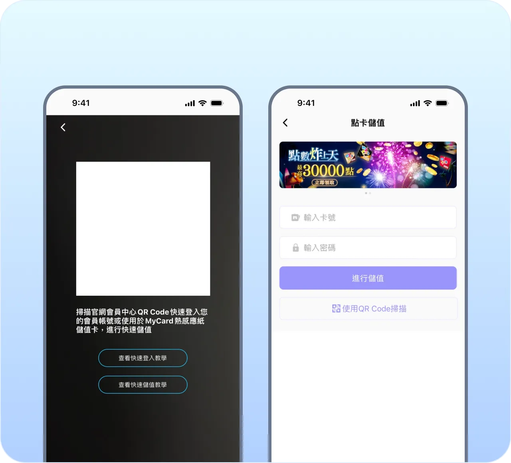
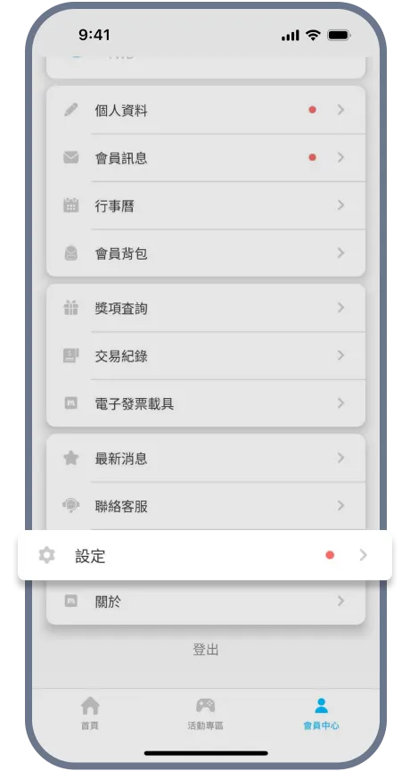

我用 MyCard 把跨游戏储点这条链理顺了
同时玩三四款台湾网游的人都懂，以前每个游戏单独充点要来回跳官网、记不同面额。MyCard 的四端联动让我实体卡扫一下就进会员钱包，再一键转点到任何合作游戏，少了三四次手动复制。
旧流程的三个卡点
我同时玩 RO 仙境传说、天堂 W、三国：谋定天下三款游戏，每款每月要补两三次点数。以前的做法是：先想清楚每款要补多少，然后分别跳三个游戏的储值页面，选面额、填卡号、输密码，各自等点数到账。这套流程最大的问题不是慢，是散——点数分散在三个游戏账户里，哪天 A 游戏搞储值回饋我忘了去，B 游戏的点数卡面额又刚好凑不上最低消费，就得临时补一张。
第二个卡点是实体卡的用法。超商买回来的 MyCard 点数卡，卡面有序号和密码，以前我要么直接冲进某一个游戏，要么存进 MyCard 会员钱包。直接冲进游戏的话，点数就钉死了，换游戏用不了；存钱包倒是灵活，但旧版本的会员系统转点要跳两次页面，还得确认每款游戏的转点规则。
第三个卡点是活动。三款游戏各有各的储值回饋时间，RO 的回饋通常在每月初，天堂 W 不定时加开，三国：谋定天下跟着大版本更新走。以前我靠浏览器标签页收藏这三个游戏的活动页面，每周翻一遍，漏了就漏了。
新流程：把点数变成"先存后扣"的链条
现在我把整条链改成：实体卡 → MyCard 会员钱包 → 目标游戏。核心动作只有两步——扫卡入钱包、选游戏转点。
实体卡入钱包这步，我用官方下载的 MyCard APP 扫卡功能。卡面的 QR Code 对准摄像头，APP 自动识别卡号和面额，选"存入会员钱包"，输一下支付密码就到账了。整个过程不超过 10 秒，比手动输入 16 位卡号快了不止一倍。APP 扫卡储值的界面很直观，扫完直接显示面额和卡名，确认一下就入库。

会员钱包的作用就是一个"点数银行"。所有通路进来的点数——实体卡扫进来的、官网线上购点的、偶尔活动送的——都先搁这儿。要给某个游戏补点时，进 APP 的"会员扣点"入口，选游戏、输金额、确认，点数就转过去了。MyCard 的官网也能做同样的事，APP 和官网是实时同步的，出门在外用手机，坐电脑前用网页，两边不打架。
实操里最容易断链的两个环节
环节一：会员注册别跳步
会员是整条链的枢纽，但注册看起来有三步（手机号 + 邮箱 + APP 绑定），很多人图省事只做前两步就停了。我第一次注册也是这样，结果后来想开通 FIDO 生物识别快速登入时发现没绑 APP，回去补绑又花了 5 分钟。注册时把三步一次做完，后面省的事多。新会员注册礼里还有随机 10~5000 点的抽奖，不绑 APP 领不到最高档。
环节二：FIDO 生物识别必须开
这是我用下来觉得提升感最明显的细节。没开 FIDO 之前，每次转点都要输支付密码，密码又得跟登录密码分开设，所以每次都得回忆一下。开了之后，APP 里转点、扫卡、查明细全靠指纹或 Face ID，手往手机 Home 键一按就过了。设置路径在 APP 的"账户安全 → FIDO 生物识别登入"，按提示录一遍指纹就行，整个过程不到 30 秒，踩过坑的可以去MyCard文档确认一下步骤顺序。

效果：少了几次手动复制
这条链跑了三个月，具体变化数一下：
- 实体卡扫一下进钱包，少了手动输入 16 位卡号这步，每张卡省 15~20 秒
- 转点统一在会员钱包操作，不用分别跳三个游戏官网，每次少 2~3 次页面跳转
- APP 推播通知把各游戏的储值回饋聚合到一个入口，不用每周翻三个标签页，活动期错过率从每月两三次降到零
- FIDO 替代支付密码，每次操作省 5 秒，每天至少两三次，累积下来省了不少碎时间
这套流程的边界
也有一些情况这套链不划算。比如某款游戏有"指定面额直接储值送双倍点数"的活动，这时候直接冲进游戏比先进钱包再转过去能多拿回饋，得多留意活动规则。再比如低价点卡的渠道别碰，MyCard 的点数卡流通性好，盗刷卡买到手可能被风控冻结点数，贪这点便宜不值得。官方渠道就是超商、官网购物中心和 APP 里的线上购点，别信私人渠道的"代充值"。
另外，跨币种的情况需要注意——MyCard 支持台币、人民币、港币、东南亚多币种，但不同币种的点数在不同游戏里能不能互通，得看游戏方的设定，不是所有游戏都支持跨币种转点。我主要玩台湾服的游戏，用台币点数没这个问题，但如果同时玩陆服和台服，就得先确认一下。
我自己的经验是，只要会员钱包里有存点、APP 和官网都能用、活动推送开着，这条链基本不会断。偶尔会遇到某款游戏的转点通道临时维护，这时候换个时间段再试就行，MyCard 的官网公告和 APP 推播会提前提醒。这套关于 MyCard 的使用心得我也分别放在了GitHub、Gitee 和 GitCode，海外网络慢的可以直接翻 GitHub，国内访问选 Gitee 或 GitCode 更顺畅。